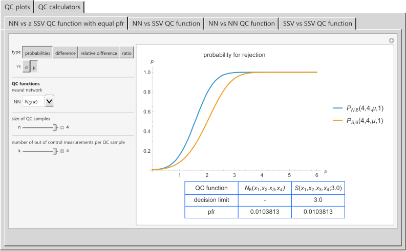

HCSL Software Repository
Intelligent Quality
Chatzimichail RA, Hatjimihail AT. Intelligent Quality: A Software Tool for Exploring the Application of Convolutional Neural Networks to Quality Control Samples of Very Small Size. Ver. 1.1.4. Hellenic Complex Systems Laboratory; 2026
Software Synopsis
This software tool was developed to explore the application of convolutional neural networks to quality control (QC) samples of 1-4 measurements and compare them to statistical single-value QC functions.
Comment
Intelligent Quality complements Intelligent Quality Control.
Snapshot

Source Notebook (Revised on 2026-05-19)
Software Requirements
Operating systems: Microsoft Windows, Linux, Apple macOS and iOS
Programming language: Wolfram Language
Source file format: Wolfram Notebook
Other software requirements: Wolfram Player (freely available) or Wolfram Mathematica
Recommended system: Intel Core i7 or equivalent CPU and 16 GB+ of RAM
Terms of Use
Project Status
Active
The material made freely available by Hellenic Complex Systems Laboratory is subject to its Terms of Use.